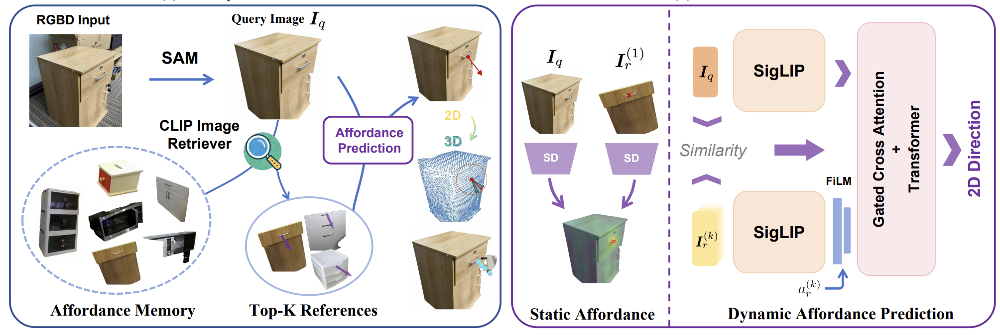
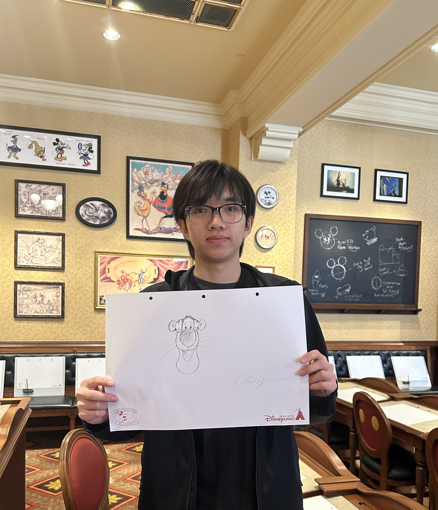
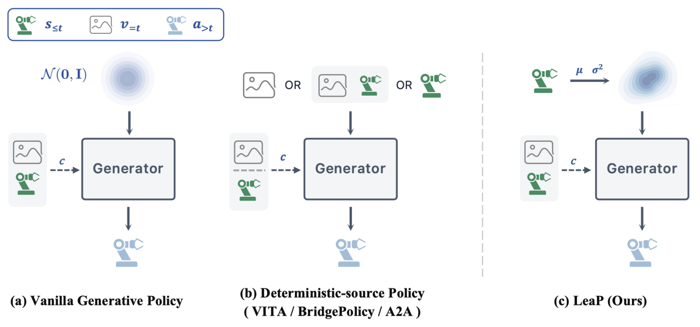
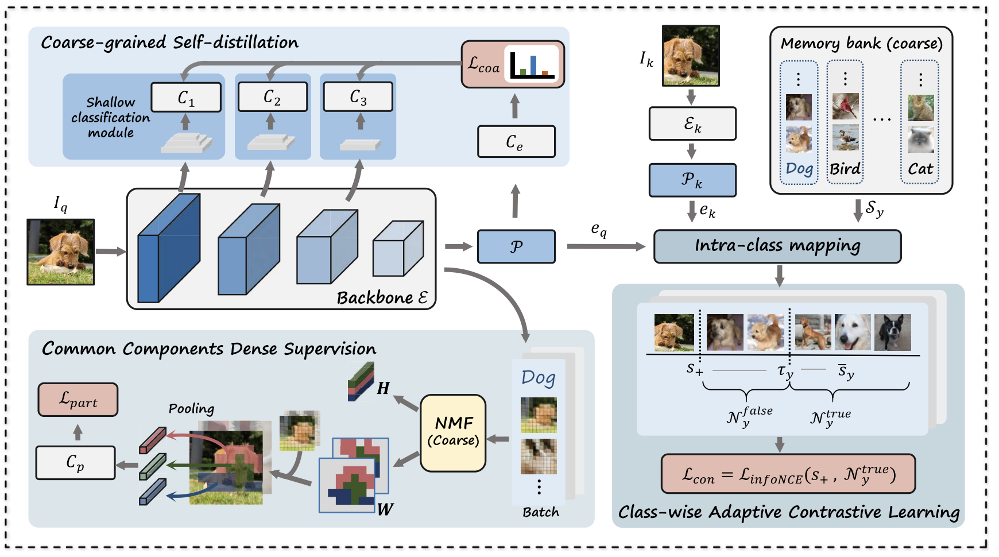
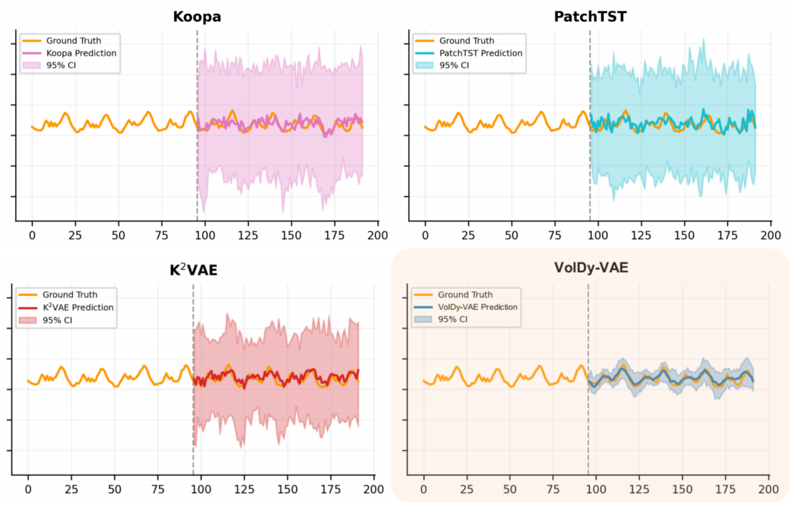
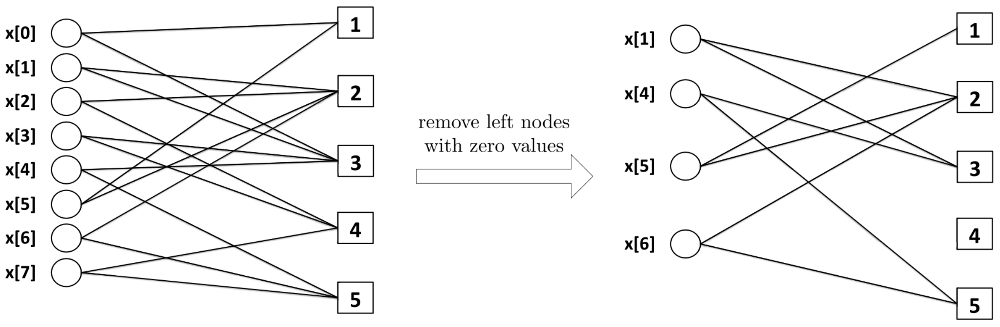

Qiyuan Zhuang

I am a master’s student in Artificial Intelligence at Southeast University, advised by Prof. Xiu-Shen Wei. I am also pursuing an M.S. in Artificial Intelligence at Monash University through a joint master’s program. Previously, I received my B.S. in Mathematics and Applied Mathematics from Lanzhou University in 2024, advised by Prof. Peng Li. I had a wonderful time as a visiting student at UC Santa Barbara during the spring quarter of 2023.
I am currently a VLA research intern at the Beijing Innovation Center of Humanoid Robotics.
My research focuses on embodied intelligence, seeking elegant methods for generalizable robotic manipulation. My work spans vision-language-action models, world-action models, visuomotor policies, and affordance learning. I am particularly interested in representation learning for embodied AI.
Publications * indicates equal contribution





Experience
Jul. 2026 — PresentBeijing, China
Beijing Innovation Center of Humanoid Robotics
X-Humanoid · VLA Research Intern
Mentors: Yinuo Zhao, Ning Liu
Jul. — Sep. 2024Suzhou, China
Honors & Service
Honors
2025
Gold Award, Autonomous Pac-Man Competition
Monash University · Top 0.3% university-wide
2024
Outstanding Undergraduate Thesis, Lanzhou University
Academic Service
Reviewer
IEEE TPAMI · IEEE TIP
AAAI 2027 · NeurIPS 2026 · CVPR 2026
· ECCV 2026